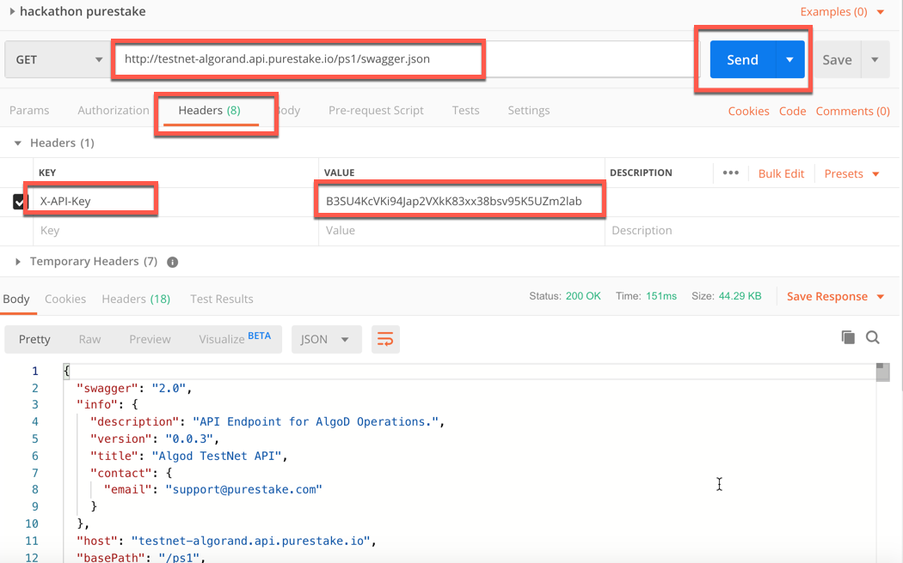

# LAB Exercise - Algorand Hackathon Developer
# Getting Started for Hackathon
Time Estimate: 1 hour
This section provides guidance on installing an Algorand node and the tools that will be useful in your hackathon efforts. Happy coding! Download algorandsamples.zip at http://github.com/algorand-devrel/hackathon and unzip into a folder off of your $HOME folder. To get your Home folder location, in terminal type in:
echo $HOME
# Install Algorand node
Time Estimate 10 minutes
In this section, we will install an Algorand node.
A synchronized node will be provided for this hackathon, however, you need to install your own node, so you can do this lab exercise and continue to work on the solution after the hackathon is over, as well as build other solutions. Follow the instructions on how to install your node are here:
https://developer.algorand.org/docs/introduction-installing-node
By default, an Algorand installation is configured to run on MainNet. For most users, this is the desired outcome. Developers, however, need access to our TestNet or DevNet networks. This guide will walk you through how to switch networks, if you have not already done so.
Your node may take a while to sync (several hours). You can proceed to the following steps in the meantime, noting if the goal command does not seem to be working, like transferring funds for example, it may be because the node is not synced yet. To see if it is synced use this command from terminal:
goal node status -d ~/node/data
The data directory is the data directory for the node. It may be simpler to set ALGORAND_DATA env variable rather than specifying each time. In that case, the -d should be removed above.
export ALGORAND_DATA=~/node/data
If your solution will need to search transactions and blocks, such as the sample Chess Game here: https://github.com/algorand-devrel/chessexample, then you will need to change a couple of settings in the config.json file in the data folder, setting Archival to true, and IsIndexerArchive to true as shown below. Rename config.json.example to config.json if needed.

Note: When installing with DEB or RPM packages the binaries will be installed in the /usr/bin and the data directory will be set to /var/lib/algorand. It is advisable in these installs that you add the following export to your shell config files.
export ALGORAND_DATA=/var/lib/algorand
When the Sync Time is zero consistently, it will be close to, if not all the way, synced.

A screenshot of a cell phone Description automatically generated
# Alternatives
The above process will take several hours to sync, so there are two alternatives that can be used in the meantime. Each option provides an Algod token and a Server URL. These values will be needed in your solution code as well as the sample hackathon lab exercises.
Option 1 -Algorand Hackathon
The API Token and Server address can be used in the Hackathon. Once the hackathon is over, you will need to use your own node or one from Purestake (see Option 2).
API Token
ef920e2e7e002953f4b29a8af720efe8e4ecc75ff102b165e0472834b25832c1
Server Address
http://hackathon.algodev.network:9100/
The above service is set to Full Archival Indexer Nodes.
# Option 2 – Purestake Token
PureStake is offering up a token for this hackathon. You do not need to register. This is free for use during the hackathon.
PureStake's token declaration works with the Algorand JavaScript SDK with a minor update to client instantiation in return for many benefits.
Additional SDK support is in progress.
# Examples of a PureStake GET and POST
After the Hackathon is over, you can register to receive a new token here:
https://www.purestake.com/algorand-api
More details here:
https://www.purestake.com/technology/algorand-services/
***API-Key token for both TestNet and MainNet:
B3SU4KcVKi94Jap2VXkK83xx38bsv95K5UZm2lab
TestNet Server URL address: https://testnet-algorand.api.purestake.io/ps1
MainNet Server URL address: https://mainnet-algorand.api.purestake.io/ps1
Purestake offers many benefits including a Basic free tier as well as Pro and Enterprise levels:
Instant Access to Algorand API in Testnet and Mainnet
- No wait for downloads and blockchain sync times
API is backed by Full Archival Transaction Indexer Nodes
- Full algod API with performant transaction queries
Secure and Reliable Infrastructure
- Automated Highly Available Infrastructure, Managed 24x7x365
Secure communications
- All API traffic over https only
Verify your data directory
To verify where your data directory is and that you are running TestNet, use these two commands:
- ps aux | grep algod

A close up of a mans face Description automatically generated
- goal node status -d ~/node/data

A screenshot of a cell phone Description automatically generated
# Apply current updates
To manually update use these commands
cd ~/node
./update.sh -d ~/node/data
To configure Auto-Update see:
https://developer.algorand.org/docs/configure-auto-update
Download/Clone Algorand SDKs in your language of choice.
These are the SDKs available to date. More are on the way. **
Time Estimate - 10 minutes
Go, see install notes here https://github.com/algorand/go-algorand-sdk
- See Go SDK documentation here: https://godoc.org/github.com/algorand/go-algorand-sdk
Python, see install notes here https://github.com/algorand/py-algorand-sdk
- See Python SDK documentation here: https://py-algorand-sdk.readthedocs.io/en/latest/
Java, see install notes here https://github.com/algorand/java-algorand-sdk
- See Java documentation here https://algorand.github.io/java-algorand-sdk/* *
JavaScript, see install notes here https://github.com/algorand/js-algorand-sdk
- See JavaScript SDK documentation visit https://developer.algorand.org
** If you do not see your language of choice, we have two swagger files that you can load in at https://app.swaggerhub.com to generate your own client. The swagger definition json files are for Algod and kmd.
KMD handles all interaction with spending keys, including signing transactions. Signing can be stand alone as well.
Algod is responsible for processing the protocol and interacting with SQLite to record the ledger. Implements REST API for read only APIs.
These swagger.json files can also be loaded into code agnostic tools such as Postman or Paw for REST API testing. To generate the latest swagger definitions, use the following commands…
For Alogd use:
curl http://$(cat ~/node/data/algod.net)/swagger.json > swagger.json
(this will appear in your node folder)
If ALGORAND_DATA is used, then replace with
curl http://$(cat $ALGORAND_DATA/algod.net)/swagger.json > swagger.json
For kmd use:
or
curl http://$(cat ~/node/data/kmd-v0.5/kmd.net)/swagger.json > swaggerkmd.json
(this will appear in your node folder)
If ALGORAND_DATA is used, then replace with
curl http://$(cat $ALGORAND_DATA/kmd-v0.5/kmd.net)/swagger.json > swaggerkmd.json
Then import at https://app.swaggerhub.com and select CodeGen Options for the Client SDK in the desired language

A screenshot of a cell phone Description automatically generated
# Install VS Code or alternate IDE (optional)
Install an Integrated Development Environment for coding and debugging JavaScript, Java, Go and/or Python solutions (optional)
Time Estimate - 10 minutes
There are many IDEs to debug many languages. This lab exercise uses Visual Studio Code on the Mac (and many other platforms). If you are familiar with Visual Studio, many of the keyboard shortcuts also work in VS Code too. Install the extensions for each language and VS Code facilitates:
Debugging
Intellisense: tool for facilitating code editing such as code completion, parameter info, quick info, and member lists
Workspace support to easily load and run each demo
Search on each language extension one at a time and install in VS Code .
Go
Python
Java
JavaScript
Should you decide to use VS Code, your extensions list should look something like this:

A screenshot of a computer Description automatically generated
Unzip the hackathon samples
Time Estimate - 5 minutes
From http://github.com/algorand-devrel/hackathon Download/Clone the Hackathon repository which has the algorandsamples.zip file and this document in the readme.md, Unzip into a folder off of your $HOME folder
To get your Home folder location, in terminal type in
echo $HOME
The contents should look similar to this:

# Start two terminal sessions
- In the first one, start localhost using http-server: Navigate to algorandsamples folder with finder and right click to start terminal session in that folder. Then enter:
http-server
- In the other terminal session, navigate to ~/node and start up kmd and node (kmd may time out after a while, so don’t just assume it is running.)
goal node start -d ~/node/data
goal kmd start -d ~/node/data
If $ALGORAND_DATA has been set, simply use
goal node start
goal kmd start
# Replace tokens and addresses in the sample code.
Time Estimate - 10 minutes
Follow the SDK install directions for each in the readme files. In all of the examples, at some point, you will need to replace the code placeholders with the Algod and Kmd tokens and network addresses in each. The files below will only appear if the KMD and Node have been started above. For the node you created, these can be found here…
From your node directory copy off values from your data directory or $ALGORAND_DATA
algod.token
algod.net
From your node directory copy off from your data directory or $ALGORAND_DATA
kmd.token
kmd.net

A screenshot of a cell phone Description automatically generated
For example, in the JavaScript SDK sample webapp test.js file update the constants with these values:

A screenshot of a cell phone Description automatically generated
Install Postman or your favorite code-agnostic tool for REST API testing (Paw… etc) (Optional)
Time Estimate - 10 minutes
When having a team of hackers, it might be useful to communicate API discussions with a code agnostic tool, as team members may have different programming skill sets.
To get the latest Algorand swagger.json files use these commands from terminal:
goal node start -d ~/node/data
goal kmd start -d ~/node/data
curl http://$(cat ~/node/data/algod.net)/swagger.json > swagger.json
curl http://$(cat ~/node/data/kmd-v0.5/kmd.net)/swagger.json > swaggerkmd.json
- If you are using the standup instance for the hackathon use this command:
curl http://$(cat http://hackathon.algodev.network:9100/swagger.json)/swagger.json > swagger.json
If you are using the Purestake service, you must supply the API token in the header and this can be done in Postman.

Import these Json swagger files into Postman

A screenshot of a cell phone Description automatically generated
Make these changes to the request:
Click on GET current status node command.
Change http://localhost to http://127.0.0.1:8080 for algod
and http://127.0.0.1:7833 for kmdIf using the hackathon instance change http://localhost to: http://hackathon.algodev.network:9100/
If using Purestake change http://localhost to:
http://testnet.algo-api.purestake.io/ps1
and the Key name is X-API-Token with Value of B3SU4KcVKi94Jap2VXkK83xx38bsv95K5UZm2lab

A screenshot of a cell phone Description automatically generated
If not using Purestake, add header key and value (info here)
The API Token for the algod process key name is X-Algo-API-Token and the kmd's Key name is X-KMD-API-Token. If using the hackathon instance, the algod X-Algo-API-Token value is: ef920e2e7e002953f4b29a8af720efe8e4ecc75ff102b165e0472834b25832c1
Press Send to send the requestSee the response

A screenshot of a social media post Description automatically generated
It might be more convenient to set the variable baseUrl in an environment of PostMan rather than changing each request individually.
There is a trick to use a pre-request script: right click on the collection Algod REST API, edit, then pre-request script, and write:
pm.request.headers.upsert({key: 'X-Algo-API-Token', value: 'e5c941507a5ae016a47a59a76b492dded26dbf0462283f2a227dae340f11b6ed' })This removes the need of adding the header in all requests.

# Goal Command Line tools / AlgoExplorer.io
Time Estimate - 10 minutes
In this section we will show how to use the goal command line tool as well as the AlgoExplorer.io.
# Goal
The goal command line tool provides access to these objects, methods and properties.

A screenshot of a computer Description automatically generated
The data directory is the data directory for the node. It may be simpler to set ALGORAND_DATA env variable rather than specifying each time. In that case, the -d should be removed above.
export ALGORAND_DATA=~/node/data
Note: When installing with DEB or RPM packages the binaries will be installed in the /usr/bin and the data directory will be set to /var/lib/algorand. It is advisable in these installs that you add the following export to your shell config files.
export ALGORAND_DATA=/var/lib/algorand
Also, if you have not set the PATH variable to include the node install folder, do so with this:
export PATH=$PATH:~/node
Restart the terminal session after defining the environment variable
To start a node use this command:
goal node start
To start kmd use this command:
goal kmd start
To get help with goal use this command:
goal -h

To get help with and command
goal [command] -h
For example, us this command to get help with node
goal node -h

A screenshot of a cell phone Description automatically generated
- Run this to get a status. We will copy off the block number, for subsequent use in AlgoExplorer:
goal node status
- Copy last committed block

# AlgoExplorer.io
The AlgoExplorer can be used to search on blocks, transactions and account addresses in either MainNet or TestNet.
Browse to https://algoexplorer.io/
Click on TestNet in the dropdown

- Paste in block, press search, click on transactions. If you do not see any transactions, use this block: 868921

- Click on TxID

A screenshot of a cell phone Description automatically generated
- Drill into a transaction and notice Sender / receiver / note / status / amount / fees and other fields.

A screenshot of a cell phone Description automatically generated
# SDKs
Click to go to your desired SDK
# JavaScript SDK
Time Estimate - 20 minutes
In this section, we use the sample web app that comes with the Algorand JavaScript SDK.
For the JavaScript samples, open folder for myjsdemo into VS Code or you favorite IDE
Or just open the js.code-workspace in the algorandsamples folder with VS Code.
The JavaScript launch.json file should be similar to this

# JavaScript SDK Sample webapp
- JavaScript AlgoSDK is a JavaScript library for communicating with the Algorand network for modern browsers and node.js. Navigate to the Algorand JavaScript GitHub repository to clone or download and note to the examples/webapp folder. This is the code we will use to learn the JavaScript SDK from.
https://github.com/algorand/js-algorand-sdk

Install the JavaScript SDK using the instructions on the readme file.
You make need to update the algosdk.min.js that is included in the demo zip, from the SDK clone/zip. But, if you do update, use the sample code on GitHub to stay in sync.

A screenshot of a cell phone Description automatically generated
Run thru debugger with localhost (launch.json file below) or just bring up Finder and double click on Test.html.
Your launch.json file should look similar to this if running localhost:
A screenshot of a social media post Description automatically generated
Run sample by navigating to the test.html page and click on buttons in this order:
Get Latest Block
Generate Account
Get Account Details - note the amount as 0, need to add money – copy off account
TestNet Dispenser – paste account
Recover Account from Mnemonic
Get Account Details – note the amount (it may take a few seconds to show up)
Submit a transaction (send money)
Get Tx From Account (TX ID) (this may take 4 or 5 seconds to show up)
Screen shots:
- Get Latest Block

A screenshot of a cell phone Description automatically generated
- Generate Account

A screenshot of a cell phone Description automatically generated
- Get Account Details

A screenshot of a social media post Description automatically generated
- Algorand TestNet Dispenser

A screenshot of a cell phone Description automatically generated
Recover Account from Account Mnemonic
If amount does not show up – press Get Account Details after a few seconds

A screenshot of a social media post Description automatically generated
- Submit Transaction

A screenshot of a cell phone Description automatically generated
- Get Tx From Account

A screenshot of a cell phone Description automatically generated
Walk thru code in code in test.js and see each function we just used.
All of this functionality is accomplished in a little over 200 lines of code! How about that!” (Applause) ☺
Open test.js
Note atoken
Note kmdtoken
If running localhost, see debug console output after scrolling thru code, this should be the same as seen when running the demo.

# Encode/Decode Note Field
Two other function to note in the code are for encoding and decoding the free form Note Field. This field is used to create Layer 2 solutions. Encode it on submit transaction and decode it when needed.
Open test.js
Locate the submit transaction code
Look for the encodeObj method

Open test.js
Locate the get transaction note code
Look for the decodeObj method

# Node Example: Retrieving Latest Block Information
- To retrieve the latest block’s information using Node, you would use the algod client wrapper functions shown below.
const algosdk = require('algosdk');
//Retrieve the token, server and port values for your installation in the algod.net
//and algod.token files within the data directory
const atoken = "your token here";
const aserver = "http://127.0.0.1";
const aport = 8080;
const algodclient = new algosdk.Algod(atoken, aserver, aport);
(async () => {
let lastround = (await algodclient.status()).lastRound;
let block = (await algodclient.block(lastround));
console.log( block );
})().catch(e => {
console.log(e);
});
# More Examples
- See https://developer.algorand.org/docs/javascript-sdk for more samples.
Node: Creating a Multisignature Account and Signing a Transaction
# Go SDK
Time Estimate - 20 minutes
- If using GO, Add the algorandsamples (or the directory you unzipped the hackathon code samples to) to the GOPATH environment variable
Add these two line by editing your bash_profile and then restart your IDE and terminal sessions:
GOPATH=~/go:~/algorandsamples/mygodemo/
export GOPATH
To edit the .bash_profile to add the above statements, quit and restart terminal and Visual Studio Code. Adapt accordingly if you are not using bash as a shell. This file is located in your home directory and you may need to type in command + shift + . to see it in Finder or opening the file in your editor, as it is hidden.
For the Go samples, open folder for mygodemo into VS Code or you favorite IDE
Or just open the go.code-workspace in the algorandsamples folder with VS Code.
The Go launch.json file should be similar to this:

In this step we will create an algodclient using the Go SDK. We will create the algod client and fetch node status information, and then a specific block. Optional Go samples are listed below as well.
In the algorandsamples folder Open go.code-workspace or the mygocode folder in VS Code
If you have not already done so, Download/clone the Go SDK from:
https://github.com/algorand/go-algorand-sdk
- Review the readme file:

- In VS Code, open algodclient.go in the VS Code Explorer

- Your launch.json file should look similar to this:

Select the debugger
Note algodToken
Note MakeClient
Note Status
Run (you may be prompted to open launch.json. After it opens, then you need to go back and select algodclient.go again in the Explorer)
Note status info in the debug console

The debug console should show results for creating an algod client, algod status and block information.
Run as many of the following samples as desired, in this order (there is a file for each in a folder in the algosamples/mygodemo folder):
# kmdclient.go - kmd client go
The following example creates a wallet and generates an account within that wallet. This account can now be used to sign transactions, but you will need some funds to get started. If you are on the test network, TestNet, you can use the dispenser* *to seed your account with some Algos.
# backupwallet.go - Backing up a Wallet
You can export a master derivation key from the wallet and convert it to a mnemonic phrase in order to back up any generated addresses. This backup phrase will only allow you to recover wallet-generated keys; if you import an external key into a kmd-managed wallet, you'll need to back up that key by itself in order to recover it.
To restore a wallet, convert the phrase to a key and pass it to CreateWallet. This call will fail if the wallet already exists:
# signsubmit.go - Signing and submitting a transaction
The following example shows how to to use both KMD and Algod when signing and submitting a transaction. You can also sign a transaction offline, which is shown in the next section of this document.
# signoffline.go - Sign a transaction offline
The following example shows how to create a transaction and sign it offline. You can also create the transaction online and then sign it offline.
# submittransfilefrom.go - Submit the transaction from a file
This example takes the output from the previous example (file containing signed transaction) and submits it to Algod process of a node.
# manipulatemultisig.go - Manipulating multisig transactions
Here, we first create a simple multisig payment transaction, with three public identities and a threshold of 2.
# Java SDK
Time estimate: 20 minutes
For the Java samples open folder for java-test into VS Code or you favorite IDE
Or just open the java.code-workspace in the algorandsamples folder with VS Code.
The Java launch.json file should be similar to this:

In this section we will get a block and display the info using the Java SDK. We will create the algod client and fetch node status information of the latest block. (Other code functions are optional).
Show the Go SDK at:
# GetBlock.java – gets the status and lastround
Open the GetBlock.java file
Note the call to getStatus
Note the call to getLastRound
Run
Note the Output Console Display of the latest block

- Run as many of the following scripts as desired, in this order (there is a file for each in a folder):
# AccountTest.java - Generate account and backup phrase
This example creates a random account, a backup phrase and performs a recovery
This account can now be used to sign transactions, but you will need some funds to get started. If you are on the test network, TestNet, you can use the dispenser* *to seed your account with some Algos.
# NewWallet.java - kmd client
The following example creates a wallet and generates an account within that wallet. This account can now be used to sign transactions, but you will need some funds to get started. If you are on the test network, TestNet, you can use the dispenser* *to seed your account with some Algos.
# BackupWallet.java and RestoreWallet.java - Backing up and restoring a Wallet
You can export a master derivation key from the wallet and convert it to a mnemonic phrase in order to back up any generated addresses. This backup phrase will only allow you to recover wallet-generated keys; if you import an external key into a kmd-managed wallet, you'll need to back up that key by itself in order to recover it.
To restore a wallet, convert the phrase to a key and pass it to CreateWallet. This call will fail if the wallet already exists:
# SignAndSubmit.java - Signing and submitting a transaction
The following example shows how to use both KMD and Algod when signing and submitting a transaction. You can also sign a transaction offline, which is shown in the next section of this document.
# SignOffline.java - Sign a transaction offline
The following example shows how to create a transaction and sign it offline. You can also create the transaction online and then sign it offline.
# SubmitFromFile.java - Submit the transaction from a file
This example takes the output from the previous example (file containing signed transaction) and submits it to Algod process of a node.
# GetAccountTransactions.java - Get account transactions
This example gets transactions for an account.
# Multisig.Java - Manipulating multisig transactions
Here, we first create a simple multisig payment transaction, with three public identities and a threshold of 2.
# EncodeDecode.Java - Encode/decode Note Field
This sample shows how to encode and decode the Note Field to build Layer 2 solutions.
# Python SDK
Time estimate: 20 minutes
#
example.py
For the Python samples open folder for mypythondemo into VS Code or you favorite IDE
Or just open the python.code-workspace in the algorandsamples folder with VS Code.
The Python launch.json file should be similar to this:

- If not already done, clone or download the Python SDK at:
Use the instructions on the readme file to install the SDK
In this section we will run the example.py code from the SDK. Before running example.py start kmd and alogd using these goal commands:
goal kmd start -d [data directory]
goal node start -d [data directory]
Next, create a wallet and account, and copy off account address.
goal wallet new [wallet name] -d [data directory]
goal account new -d [data directory] -w [wallet name]
Paste the account address into the Algorand TestNet Dispenser to send Algos to this account.
Edit params.py and add token information and data-dir-path
- Edit params.py
- Add token info for algod and kmd
- Add your data directory path

Edit example.py
- Edit example.py
- Uncomment Enter your Wallet, password and account info
- Comment prompt for these values
- Run the code and see the results in the Output console

The example code performs the following functions:
Create kmd and algod clients
Create a new kmd wallet
Generate an account and import to wallet
Get the mnemonic
Get last block
Create a transaction
Sign a transaction with kmd
Sign a transaction with account
Send the transaction
To see the new wallet and accounts we created use:
goal wallet list -w [wallet name] -d data
You should see something like this:

goal account list -w [wallet name] -d data
You should see something like this:

Other examples – (optional)
Using the Wallet class https://github.com/algorand/py-algorand-sdk#using-the-wallet-class
Backing up a wallet with mnemonic https://github.com/algorand/py-algorand-sdk#backing-up-a-wallet-with-mnemonic
Recovering a wallet using a backup phrase https://github.com/algorand/py-algorand-sdk#recovering-a-wallet-using-a-backup-phrase
Writing transactions to file https://github.com/algorand/py-algorand-sdk#writing-transactions-to-file
Manipulating multisig transactions https://github.com/algorand/py-algorand-sdk#manipulating-multisig-transactions
# Working with the Note Field:
https://github.com/algorand/py-algorand-sdk#working-with-notefield
# Getting started with Private Network (optional)
5 Minutes
In this section you will learn how to create a Private Network. A Private Network is for developers. It allows you to learn Algorand Blockchain without having to touch either TestNet or MainNet. Code using the Algorand SDKs, can be used to access the Private Network.
This exercise is suggested for developers that are just getting started with Algorand.
Note: the Algorand TestNet Dispenser, a tool used to send Algos to an account, only works for TestNet and not a Private Network.
Navigate to the algorandsamples folder
Open networktemplate.json in VS Code and review. Note the Primary and Node Nodes that will be created.

A close up of a map Description automatically generated
In Finder, navigate to your root directory and show the directory structure does not have folders for Node and Primary.
Run this command in Terminal from the node folder to create the private network.
goal network create -r ~/net1 -n private -t networktemplate.json

goal network start -r ~/net1
goal network status -r ~/net1

Open Finder and look at the directory structure for /net1/Node and /net1/Primary

(Optional) The full set of Private Network tutorials are here: https://developer.algorand.org/docs/tutorials. This is a great learning resource.

A screenshot of a cell phone Description automatically generated
Go to https://developer.algorand.org/docs/creating-new-account-and-participation-key to complete all the rest of the tasks in this tutorial including:
Creating a new wallet
Creating a new Account and Participation key
Write a raw transaction and post to algod REST server
Creating a multisig account

A screenshot of a cell phone Description automatically generated
- Once finished you can delete the private network as this is for learning only and cannot be used for further development, other than testing with SDK code. Delete the Private Network
goal network delete -r ~/net1
# Resources
More resources can be found here:
AlgoExplorer.io
Algorand GitHub
Algorand TestNet Dispenser
Developer Portal
Developer FAQs
Forums
Community Portal – Events, Blog, Chapters, etc
Community Ambassador program
Swagger hub
Algorand Foundation Roadmap
Token Dynamics
YouTube Algorand
Consensus 2019 videos - Turing award winner - Silvio Micali keynote - is in the second group (Construct) #55 - Building the Technical Innovation Required for a New Borderless Economy

More resources here:
Python www.python.org/downloads
or
Java
https://www.oracle.com/technetwork/java/javase/downloads/index.htmlEnable JavaScript in browsers https://www.techwalla.com/articles/how-to-enable-javascript-on-a-mac
Install Node JS for localhost server https://www.npmjs.com/package/http-server